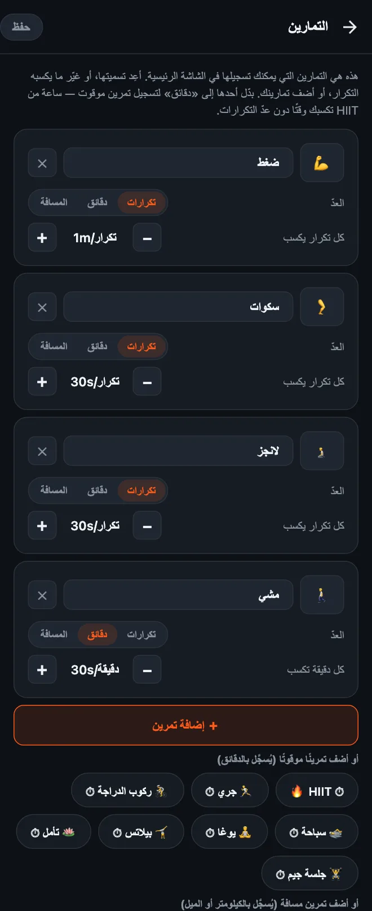

كيف تخصص تمارينك في HonorFit
أهلًا بالجميع! بدأ HonorFit حاجبَ تطبيقات بتمارين الضغط (بالإنجليزية) صنعته لنفسي: يبقى إنستغرام مقفلًا حتى أعمل بعض تمارين الضغط، وأسجّلها بنفسي بنظام الشرف (بالإنجليزية)، بلا كاميرا. يأتي مع أربعة تمارين: الضغط، والبطن، والعقلة، والقرفصاء.
لكن ليس الجميع يريد عمل تمارين الضغط. ربما معصماك يكرهانها، أو تفضّل البيربي، أو ربما جريت 8 كيلومترات اليوم وتريد أن تُحسب. معك حق! لذلك يمكنك تغيير كل ذلك. إليك الطريقة بالضبط، وما المجاني وما الذي يحتاج Pro.
ما المجاني وما الذي في Pro
الخبر الجيد أولًا: بدءًا من الإصدار 1.15.0، أصبح كل ما في هذه المقالة تقريبًا مجانيًا. يأتي HonorFit مع أربعة تمارين مدمجة بهذه القيم:
| التمرين | كل تكرار يمنحك (افتراضيًا) |
|---|---|
| 💪 الضغط | دقيقة واحدة |
| 🔥 البطن | 30 ثانية |
| 🧗 العقلة | دقيقة و30 ثانية |
| 🦵 القرفصاء | 30 ثانية |
في النسخة المجانية يمكنك إعادة تسمية التمارين وترتيبها وحذفها، وتغيير ما يمنحه كل تكرار، وتسجيل تمارين بالوقت بالدقائق أو بالمسافة بالكيلومتر أو الميل، وإضافة حتى 3 تمارين خاصة بك. تصل العجلات إلى 100 في المجموعة الواحدة، ويمكنك ادّخار حتى ساعتين في المرة. الحجب والتسجيل والإحصاءات مجانية إلى الأبد.
Pro بـ 3 دولارات شهريًا أو 19.99 دولارًا مرة واحدة (هذا سعر الولايات المتحدة؛ يعرض لك المتجر السعر بعملتك). بالنسبة للتمارين، يتيح لك إضافة ما تشاء من تمارينك الخاصة. ويرفع أيضًا حد الساعتين للوقت المدّخر، ويضيف الروتينات المحفوظة، والإيقاف المؤقت، ووضع «لاحقًا»، وسجل الشهر والسنة.
1. افتح محرر التمارين
- في الشاشة الرئيسية، اضغط على الترس في الأعلى لتفتح الإعدادات.
- اضغط على بطاقة التمارين في الأعلى.
سترى بطاقة لكل تمرين. لا شيء تفعله هنا يسري حتى تضغط حفظ في الأعلى، فجرّب كما تشاء. إذا خرجت دون حفظ، لا يتغير شيء.

2. أعد تسمية تمرين أو غيّر رمزه التعبيري
اضغط على الاسم واكتب ما تريد. يمكن أن يصبح «الضغط» «ضغط على الركبتين» أو «ضغط على الحائط» إذا كان هذا ما تفعله فعلًا. لتغيير الأيقونة، اضغط على مربع الرمز التعبيري بجانب الاسم واختر واحدًا من الشبكة (فيها نحو 40 رمزًا له علاقة باللياقة).
ملاحظة صغيرة: الأسماء المدمجة تتبع لغة التطبيق، فيظهر «القرفصاء» بالعربية إذا كان هاتفك بالعربية. وبمجرد أن تعيد تسمية واحد، يظهر تمامًا كما كتبته.
3. حدّد كم من وقت الشاشة يمنحك كل تكرار
تحت كل تمرين ستجد كل تكرار يمنحك مع زرّي − و+. كل ضغطة تغيّره بـ 5 ثوانٍ، وأقل قيمة 5 ثوانٍ. فيمكنك أن تجعل البيربي بدقيقة ونصف، وقفز الفتح والضم بعشر ثوانٍ، أيًا كان ما تراه عادلًا.
ويمكنك أيضًا تغيير القيم فقط دون فتح المحرر: في الإعدادات قسم قيم التكرارات تحت بطاقة التمارين مباشرة، بأزرار −/+ نفسها.
4. أضف تمرينًا
طريقتان:
- اضغط «＋ إضافة تمرين». تحصل على بطاقة جديدة اسمها «تمرين جديد» بقيمة 30 ثانية للتكرار. أعد تسميتها وحدّد القيمة.
- اضغط على اقتراح. تحت الزر صف من التمارين الشائعة تضيفها بضغطة واحدة: البيربي، والطعنات، وقفز الفتح والضم، والبلانك، ومتسلق الجبال، والغطس، ونط الحبل، ورفع الركبتين، وثني العضلة ذات الرأسين، وأرجحة الكيتلبيل، والجلوس على الحائط، واللف الروسي، وجسر الأرداف، وكيجل. تبدأ هي أيضًا بـ 30 ثانية للتكرار. وبمجرد أن تضيف واحدًا، يختفي من الاقتراحات.
في النسخة المجانية يمكنك امتلاك حتى 3 تمارين خاصة بك في الوقت نفسه (إعادة تسمية التمارين المدمجة لا تُحسب منها). وPro يجعلها بلا حدود.
كل تمرين لديك يحصل على عجلته الخاصة في الشاشة الرئيسية، لذلك أنصح بأن تبقيها نحو أربعة. أكثر من ذلك وستمرر الشاشة بحثًا عن التمرين الذي تريده.
5. سجّل تمارين بالوقت (دقائق بدل التكرارات)
هذا أكثر ما أُسأل عنه. بعض التمارين لا تأتي بالتكرارات أصلًا: مشية، حصة يوغا، جري، ساعة في النادي. في كل بطاقة مفتاح يُحسب: تكرارات | دقائق | مسافة. حوّله إلى دقائق، فتعدّ تلك العجلة الدقائق، وتصبح القيمة كل دقيقة تمنحك.
وهناك أيضًا اقتراحات بالوقت بضغطة واحدة (يظهر بجانبها ⏱): HIIT، والجري، وركوب الدراجة، والسباحة، واليوغا، والبيلاتس، والتأمل، وحصة النادي، والمشي.
التمارين الجديدة بالوقت تبدأ بـ 30 ثانية لكل دقيقة، فساعة من HIIT تمنحك 30 دقيقة من وقت التطبيقات. تنبيه: حين تحوّل تمرينًا بين التكرارات والدقائق، تعود قيمته إلى 30 ثانية، لأن «دقيقة لكل تكرار» و«دقيقة لكل دقيقة» صفقتان مختلفتان تمامًا. فقط اضبطها من جديد بعد التحويل.
العجلة تعدّ دقائق كاملة، لذلك لا يناسب بلانك من 30 ثانية وضع الدقائق فعلًا. لتمارين الثبات مثل هذه، أنصح بإبقائها على التكرارات وأن تقرر بنفسك ما يعنيه التكرار (مثلًا ثبات واحد لمدة 20 ثانية).
6. سجّل تمارين بالمسافة (كيلومتر أو ميل)
جديد في 1.17.0: إذا كنت تفضّل أن تحسب جريك بالكيلومترات بدل الدقائق، فحوّل المفتاح إلى مسافة. يظهر لك مفتاح الوحدة (كم | ميل)، وتصبح القيمة كل كيلومتر يمنحك أو كل ميل يمنحك. يبدأ بالميل في الولايات المتحدة والمملكة المتحدة، وبالكيلومتر في كل مكان آخر.
اقتراحات المسافة يظهر بجانبها 📏: المشي، والجري، والعدو السريع، والمشي في الطبيعة، وركوب الدراجة، والسباحة، والتجديف. التمارين الجديدة بالمسافة تبدأ بـ 5 دقائق من وقت التطبيقات لكل كيلومتر (8 دقائق لكل ميل)، فجري 5 كم يمنحك 25 دقيقة. تحويل تمرين إلى المسافة يعيده إلى هذه القيمة الافتراضية أيضًا، لكن التبديل بين الكيلومتر والميل يحوّل القيمة، فالجري نفسه يمنحك الوقت نفسه في الحالتين.
في الشاشة الرئيسية تزيد العجلة بخطوات 0.1، حتى 20 في المرة، وتحتفظ الإحصاءات بمجموع مسافتك. التمارين بالمسافة مجانية وتُحسب من تمارينك الخاصة الثلاثة، مثل التمارين بالوقت.
7. احذف تمرينًا، أو ابدأ من جديد
- اضغط على ✕ في البطاقة لحذف ذلك التمرين. يجب أن تُبقي تمرينًا واحدًا على الأقل.
- استعادة الإعدادات الافتراضية في الأسفل تعيد التمارين الأربعة الأصلية بقيمها الأصلية. ومثل كل شيء هنا، لا تثبت إلا حين تضغط حفظ.
كيف أختار القيم
القيمة هي ثمن تطبيقاتك، فالهدف ثمن ستدفعه فعلًا بدل أن تكذب بشأنه. بعض نقاط البداية:
- الحركات الأصعب تكسب أكثر. العقلة والبيربي بدقيقة ونصف، والضغط بدقيقة، والقرفصاء والطعنات بـ 30 ثانية.
- التمارين بالوقت بنحو النصف. 30 ثانية لكل دقيقة تعني أن مشية 20 دقيقة تشتري لك 10 دقائق من التصفح. إذا كان المشي هو العادة التي تريدها أكثر من غيرها، فارفعها إلى دقيقة لكل دقيقة.
- إذا ضبطت نفسك تتلاعب بالرقم، فاخفض الثمن. هذه قاعدتي مع نظام الشرف. تسجيل تكرارات لم تؤدّها يعني أن الثمن خطأ، لا أنك سيئ في هذا.
- الوضع الصعب (مجاني) يقسم كل القيم على اثنين بمفتاح واحد في أعلى الشاشة، إذا أردت يومًا أصعب دون تعديل كل شيء. اضغطه مرة أخرى لـ وضع المرض (مجاني أيضًا)، الذي يضاعف كل القيم للأيام التي لا تكون فيها بخير.
إذا أردت أفكارًا لإعدادات محددة، كتبت مقالتين أخريين: كيجل وجسر الأرداف كتمارين للفتح، وتمارين خفيفة حين لا تناسبك تمارين الضغط.
HonorFit Blocker حاجب تطبيقات مجاني لـ iPhone وAndroid. نظام الشرف، بلا كاميرا، ولا شيء يغادر هاتفك. حتى 3 تمارين خاصة مجانًا، بما فيها التمارين بالوقت والمسافة؛ وPro يجعلها بلا حدود. ليس للجميع، لكن ربما يعجب بعضكم!